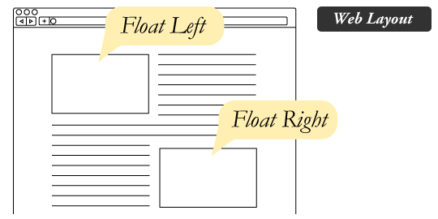

CSS-1
CSS
Cascading Style Sheets
HTML описва съдържанието, CSS описва визуализацията. Тоест:
- Как да са подредени нещата на екрана.
- Кое колко да е голямо.
- Какъв цвят да е даден текст, фон и тн.
Как работи CSS
За да можем лесно да стилизираме дадена страница избираме компонентите, които искаме да стилизираме (чрез някакъв селектор) и задаваме стойности на property-тата, които искаме да променим. Съответно браузъра ще ги промени на всички елементи, които е match-нал даденият селектор.
CSS Syntax
Използване на CSS
Има 3 начина на използване на CSS:
- като стойност на style атрибута на html елемент (very bad)
<a href="//google.com" style="color:red">Click Here</a> - като добавим style tag в HTML-a (обикновено в head-а) (not good)
<style> a { color: red } </style> - като го линк-нете като външен файл (good)
<link href="style.css" rel="stylesheet">
Основни CSS селектори
- *
- Избира всички елементи - не се препоръчва.
- foo
- Избира елементи с таг foo
- .bar
- Избира елементи с атрибут клас = bar
- #baz
- Избира елементи с атрибут id = baz
- foo bar
- Избира елементи bar, наследници на елементи foo
- foo, bar
- Може да се изброят няколко селектора и ще избере обединението им
tag#id.class
можете да комбинирате няколко селектора в един
Още малко селектори
Има много, но като за начало ще споменем само тези
- foo > bar
- Избира елементи bar, директни наследници на елементи foo
- foo + bar
- Избира елементи bar, които следват непосредствено след елементи foo
- E:first-child
- Избира само елементи избрани от селектора E, които са първите наследници (ако има ul със 5 li-та в него ще избере само първото).
- E:hover
- Избира елементи докато сте си сложили мишката върху тях (обикновено се ползва за линкове - не работи за други неща в стари браузъри)
Следващия път ще споменем и още някои. Ако ви е интересно ето ги всички (w3 ref)
Цветове
Като най-лесни ще започнем с цветовете. Има 4 стандартни начина за дефиниране на цвят:
- Име - `red`
- RGB - `rgb(255, 0, 0)`
- red, green, blue със стойности 0-255
- HEX - `#ff0000`, `#f00`
- аналогично, но в 16тичен запис. второто е кратък запис когато 2те цифри на всеки цвят съвпадат
- HSL - `hsl(0, 100%, 50%)`
- Hue, Saturation, Lightness - задава цвят (тоест ъгъл от цветовия кръг), наситеност 0-100% и осветеност 0-100% ¿
- RGBA, HSLA - `rgba(255, 0, 0, 0.3)` `hsla(0, 100%, 50%, 0.3)`
- последното се нарича алфа канал - стойността задава "непрозрачност" на цвета (0 = transparent, 1 = нормален цвят)
CSS Метрики
- `px` (pixel) - няма нужда от обяснение
- `pt` (point) - мерната единица за размер на шрифта в word (не се препоръчва).
- `em` - 1em = текущия размер на шрифта за съответния елемент. Ако работите с em, то можете да resize-нете всичко лесно просто като промените font-size на html/body.
- `%` - процентите зависят от контекста.
- при шрифтове: 100% = 1em = конкретния размер на шрифта
- в останалите случаи: 100% = съответния размер на даден родител (width, height) ¿
Внимавайте ако използвате проценти при височини - ако родителя няма зададена височина и използвате проценти може да има лоши последствия.
Текст
color- цвят на текстаtext-decoration- none / underline / overline / line-throughtext-align- left / right / center / justifytext-transform- none / uppercase / lowercase / capitalize
Font stuff
font-style- normal / italicfont-weight- normal / bold - има и други стойностти, но при повечето шрифтове те са равни на една от тезиfont-size- размер на шрифтаline-height- височина на редаfont-family- кой точно шрифт да се използва ("Times New Roman", Verdana, Consolas, Lucida Console, Arial и тн) - ако изредите няколко ще се използва първия наличен. Позволява и още 2 стойности -serifиsans-serif.font- кратка версия на последователносттаfont-style font-weight font-size/line-height font-family- задължителни са само font-size и font-familyfont: italic bold 16px/30px Verdana, Consolas, sans-serif;или пък простоfont: 16px Verdana;
Background
background-color- цвят на фонаbackground-position- x и у позициониране на картинка ако има такава - става чрез думи катоtop left centerили проценти за позиция на центъра или пиксели отместване demobackground-repeat- repeat-x, repeat-y, repeat, no-repeat, fixedbackground-attachment- fixed / scrollbackground-image-url("...")background: color position repeat attachment image
Display
display:none- елементът е скрит и страницата се рендерира все едно той въобще не съществуваdisplay:inline- елементът се разглежда като обикновен текст и следващите го елементи продължават непосредствено след него (вдясно от последния символ)display:block- елементът се разглежда като правоъгълник - той има width и height property-та и елементите след него продължават на долния редdisplay:inline-block- средно аритметично между първите 2. Елементът има височина и ширина, но откъм гледна точка на следващите елементи е все едно, че е бил inline и те продължават вдясно от негоdisplay:table,display:table-row,display:table-cell- показват се както биха се показвали съответните елементи на таблицаdisplay: flex,display: grid- ще обясним следващия път - не ги използвайте за домашно CSS 1
Box Model

- width и height: ширина и височина на съдържането
- border-width: дебелина на border-a
- padding: разстояние между border-a и съдържанието
- margin: разстояние между дадения елемент и другите такива
Shorthand properties
- Имаме
border-top-width,padding-right,margin-bottometc. - Можем обаче и да зададем всички стойности на един ред, задавайки 1-4 стойности.
- Ето какво задаваме в зависимост от броя изброени стойности.
margin: top right bottom left(часовникова стрелка, trbl като trouble)margin: top left/right bottommargin: top/bottom left/rightmargin: all
Position
position- static / relative / absolute / fixedposition: static- Това е по default. Не позволява отместване.- Ако зададем друго получаваме и property-тата - top, right, bottom, left.
position: relative- Позволява отместване (транслация) спрямо текущата позиция в дадената посокаposition: absolute- Абсолютно позициониране спрямо най-близкия родител със зададен position (!=static). Стойностите trbl задават разстоянието до съответния край на родителяposition: fixed- Фиксира елемента на дадената позиция на екрана. Стойностите trbl задават разстояние до съответния край на екрана (viewport-a) - не работи добре в някои мобилни браузъри- Демо
- При последните 2 родителят не се стреми да обхваща съответното дете.
Float + Clear
- `float` - left / right / none - познато като text-wrap в Word.
- 
- Както при position: absolute така и при float родителят може да свърши прекалено рано.
- Затова има `clear` - left / right / both / none. Елемент с clear ще започне на нов ред и така ще оправи размера на родителя си. (подробно обяснено)
.clearfix:after { content: ""; visibility: hidden; display: block; height: 0; clear: both; }
Други
- `z-index`
- 3та координатна ос - от екрана към нас. По-голям z-index = по-близък елемент.
- Работи само на елементи с position != static
- Също така сравнението става отгоре надолу спрямо html йерархията - сравняват се първо родители и после деца.
- `opacity` - 'непрозрачност' - от 0(прозрачно) до 1(непрозрачно);
- `visibility` - видимост - visible / hidden може да прави елементите невидими, но пак заемат място в layout-a.
- `overflow` (и `overflow-x` и `overflow-y`) - visible / hidden / scroll / auto - задава какво става с деца излезли от контейнера - дали се виждат, са скрити или има скролбар. auto добавя скролбар само при нужда.
- `vertical-align` - top, bottom, middle, стойност
- На клетка на таблица - позиционира съдържанието.
- На елемент с `display: inline-block` - позиционира го спрямо съседите му.